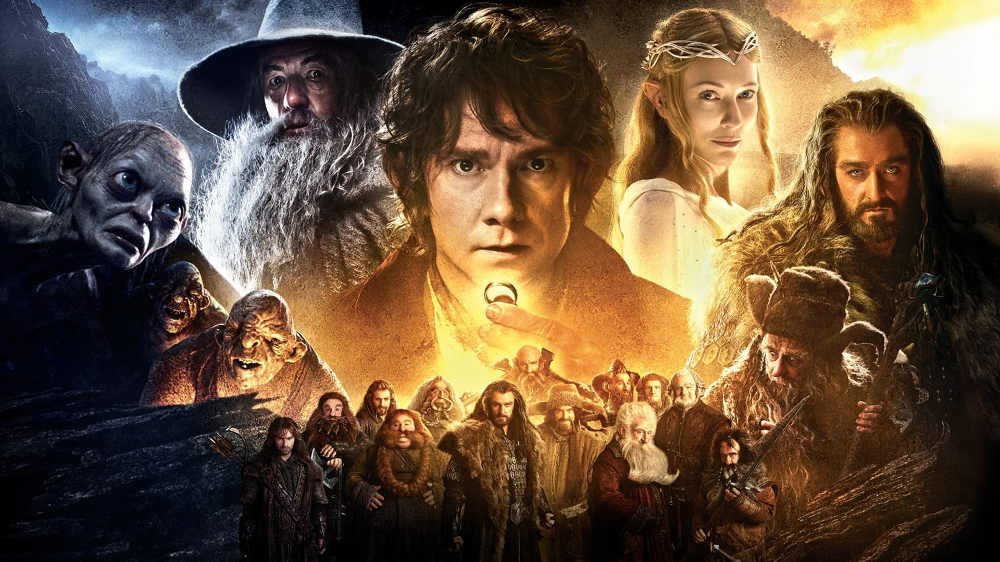
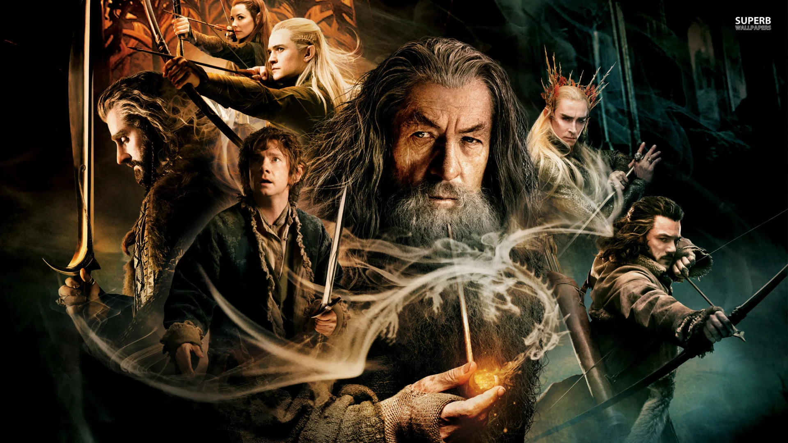
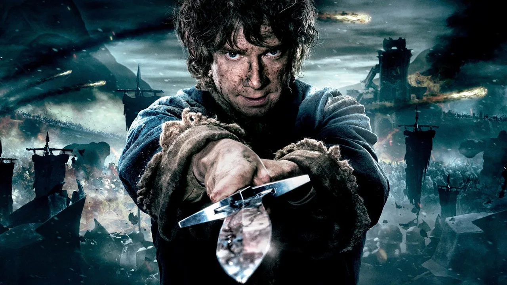

Lo Hobbit
Lo Hobbit (The Hobbit) è una trilogia cinematografica fantasy co-scritta, diretta e co-prodotta dal regista neozelandese Peter Jackson, basata sull'omonimo romanzo scritto da J. R. R. Tolkien nel 1937, con diverse parti tratte dalle Appendici de Il ritorno del re, ultimo libro della saga de Il Signore degli Anelli e da altri scritti. La trilogia è un prequel della trilogia de Il Signore degli Anelli di Jackson.La sceneggiatura è stata scritta da Jackson, Fran Walsh, Philippa Boyens e Guillermo del Toro, il quale doveva inizialmente dirigere i film prima di abbandonare il progetto nel 2010. I film sono ambientati nella immaginaria Terra di Mezzo, sessant'anni prima degli eventi de Il Signore degli Anelli, e narrano le avventure dello hobbit Bilbo Baggins (Martin Freeman), convinto dallo stregone Gandalf il Grigio (Ian McKellen) a seguire un gruppo di tredici nani guidati da Thorin Scudodiquercia, nella loro impresa di reclamare la Montagna Solitaria al drago Smaug. Nei film sono stati inoltre aggiunti elementi presi da altri scritti di Tolkien, come la ricerca di Gandalf a Dol Guldur e l'inseguimento dei nani da parte di Azog e Bolg, orchi in cerca di vendetta contro Thorin e la sua famiglia. I film presentano un ampio cast che include James Nesbitt, Ken Stott, Evangeline Lilly, Lee Pace e Luke Evans e in ruoli secondari Manu Bennett, Sylvester McCoy, Stephen Fry, Mikael Persbrandt, Barry Humphries e Lawrence Makoare. Inoltre molti attori riprendono i loro ruoli dal Signore degli Anelli, tra cui Cate Blanchett, Orlando Bloom, Ian Holm, Christopher Lee, Hugo Weaving, Elijah Wood e Andy Serkis. Tornano inoltre nel cast tecnico gli illustratori John Howe e Alan Lee, lo scenografo Dan Hennah, il direttore della fotografia Andrew Lesnie e il compositore Howard Shore.
-

Un viaggio inaspettato
"Lo Hobbit: Un Viaggio Inaspettato" è un film tratto dal romanzo di J.R.R. Tolkien che narra le avventure di Bilbo Baggins, uno Hobbit tranquillo e casalingo, che viene coinvolto in un'epica avventura grazie all'incontro con il mago Gandalf. La storia inizia quando Gandalf visita Bilbo nella Contea e lo recluta come "ladro" per una missione pericolosa: aiutare un gruppo di Nani a reclamare il loro regno perduto, Erebor, dalle grinfie del drago Smaug. Inizialmente riluttante, Bilbo si unisce alla compagnia dei Nani guidata dal principe Thorin Scudodiquercia. Il viaggio inizia attraverso terre pericolose e misteriose, con Bilbo che si trova ad affrontare creature straordinarie come Troll, Orchi e gli enigmatici Elfi del Bosco. Durante il percorso, Bilbo trova un misterioso Anello d'oro che conferisce poteri invisibili al suo portatore. La compagnia attraversa la Terra di Mezzo, incontrando ostacoli e avventure lungo il cammino. Arrivano infine al Monte Solitario, dove devono affrontare il formidabile drago Smaug che ha usurpato il regno dei Nani. Bilbo dimostra il suo coraggio e la sua astuzia nel confronto con Smaug, cercando di scoprire i punti deboli del drago. Nel frattempo, il potere dell'Anello inizia a influenzare Bilbo, rendendolo più sicuro di sé e determinato. Alla fine, grazie all'ingegno di Bilbo, i Nani riescono a liberare Erebor dalla minaccia di Smaug. Tuttavia, il drago sopravvive e si scaglia contro il Lago di Città del Lago. Il film culmina con un epico scontro tra Smaug e i popoli della Terra di Mezzo, mentre Bilbo e i Nani cercano di proteggere il loro tesoro appena recuperato. Bilbo deve affrontare scelte difficili mentre il potere dell'Anello continua a crescere dentro di lui.
-

La desolazione di Smaug
Dopo che la Comunità ha subito gravi perdite, Frodo Baggins e il suo fedele amico Sam Gamgee continuano il loro pericoloso viaggio verso Mordor per distruggere l'Anello. Nel frattempo, Aragorn, Legolas e Gimli inseguono i Cavalieri Neri che hanno rapito i loro amici Hobbit, Merry e Pippin. Durante la loro ricerca, vengono coinvolti nella difesa del regno di Rohan contro le forze di Saruman, un mago traditore alleato di Sauron. Merry e Pippin, fuggiti dai Cavalieri Neri, incontrano gli Ent, antiche creature arboree, e convincono gli Ent a marciare contro Isengard, la fortezza di Saruman. Nel frattempo, Aragorn, Legolas e Gimli incontrano Éomer, un nobile di Rohan, e insieme affrontano la minaccia degli Uruk-hai di Saruman. Nel frattempo, Gandalf il Bianco, resuscitato dopo il suo scontro con il Balrog, si unisce a Théoden, Re di Rohan, per liberare la capitale di Rohan, Edoras, dal malvagio incantesimo di Saruman. Il film si concentra sulle lotte e sulle alleanze che emergono in Medio Terra mentre il male di Sauron si diffonde. Frodo e Sam, sempre più afflitti dall'oppressione dell'Anello, devono confrontarsi con Gollum, una creatura corrotta dalla sua lunga possessione dell'Anello. Gollum si offre di guidare Frodo e Sam attraverso un percorso segreto verso Mordor, ma la sua presenza porta tensione e sospetto tra i due amici.
-

La battaglia delle cinque armate
La storia si articola intorno al culmine della missione di Frodo Baggins di distruggere l'Anello del Potere, mentre le forze del Male di Sauron si radunano per la battaglia finale. Il film inizia con l'epica battaglia per la città di Minas Tirith, capitale di Gondor, che è sotto assedio dalle forze di Sauron. Aragorn, Legolas, Gimli e Gandalf si uniscono alla difesa della città mentre Frodo e Sam continuano il loro percorso verso il Monte Fato, guidati da Gollum. Nel frattempo, Merry e Pippin, insieme agli abitanti di Rohan e agli Ent, partecipano alla Battaglia di Pelennor Fields, dove si scontrano con le forze di Sauron guidate dal Re Stregone di Angmar. In una resa dei conti epica, Éowyn, guerriera di Rohan, sconfigge il Re Stregone, salvando la città e dimostrando il suo coraggio. Nel regno oscuro di Mordor, Frodo e Sam raggiungono il Monte Fato, ma Frodo è indebolito dal peso dell'Anello. Gollum, desideroso di recuperare l'Anello, tradisce Frodo e Sam, ma alla fine cade nel fuoco del Monte Fato insieme all'Anello, ponendo fine alla minaccia di Sauron. Con la distruzione dell'Anello, le forze di Sauron vengono sconfitte e il male che ha oscurato la Terra di Mezzo viene disperso. Aragorn rivendica il suo diritto come Re di Gondor e unisce tutte le razze libere nella battaglia finale contro le forze del Male. Il film culmina con l'epico scontro tra le forze del Bene e del Male nella Battaglia dei Campi di Cormallen, dove Aragorn, Gandalf e gli altri leader portano la vittoria decisiva contro le rimanenti forze nemiche. La pace torna alla Terra di Mezzo, ma non senza sacrificio e perdite.